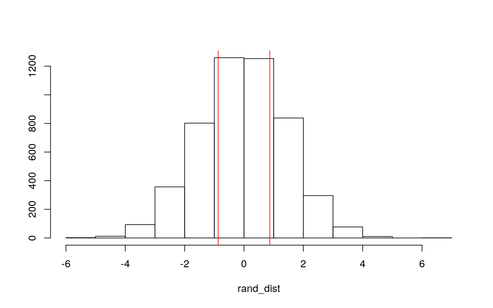
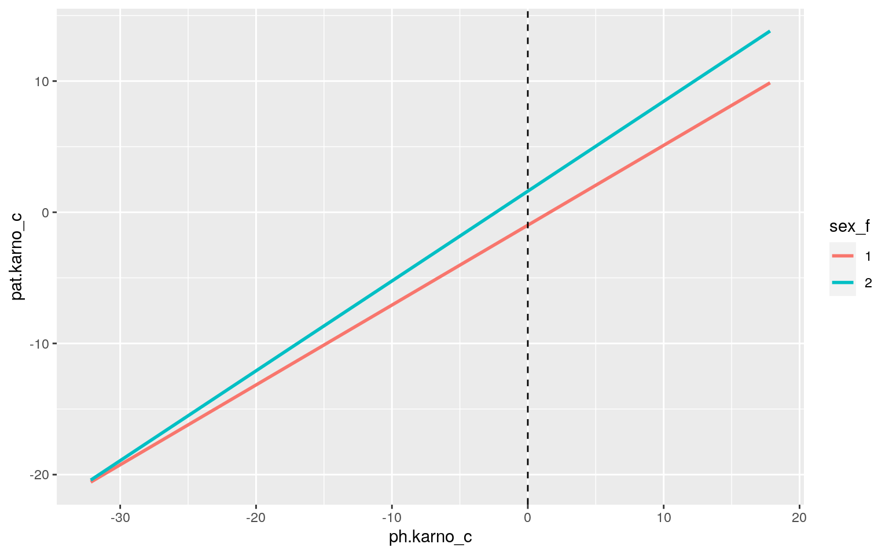
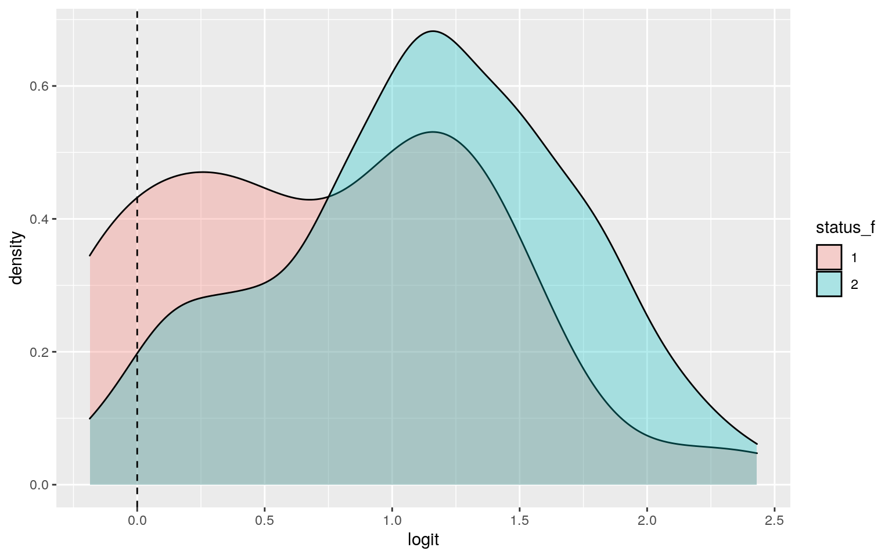
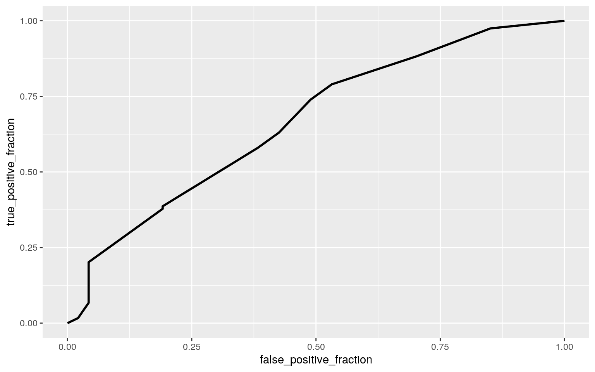

This dataset, titled NCCTG Lung Cancer Data, contains information about survival times and the physical well-being of patients from the North Central Cancer Treatment Group who have advanced lung cancer. The dataset has 227 observations of 10 variables, and each observation corresponds to a different patient. There are 4 categorical variables: inst, status, sex, and ph.ecog. Institution refers to the patient's institution code, status refers to whether or not the patient died during the observation time of the study, sex refers to whether the patient is male or female, and ph.ecog refers to ECOG performance score as rated by a physician. ECOG performance status measures whether a patient is able to receive chemotherapy while maintaining an acceptable level of well-being; 0=asymptomatic, 1= symptomatic but completely ambulatory, 2= in bed <50% of the day, 3= in bed > 50% of the day but not bedbound, and 4 = bedbound. No patients in this dataset are in categories 3 or 4 for the ECOG test. There are 6 numerical variables: time, age, ph.karno, pat.karno, meal.cal, and wt.loss. Time refers to the patient's survival time in days, age refers to the patient's age in years, ph.karno refers to Karnofsky performance score (bad=0-good=100) rated by the physician, pat.karno refers to Karnofsky performance score as rated by patient, meal.cal refers to the number of kcal consumed at meals, and wt.loss corresponds to pounds of weight loss over a 6-month period.
library(survival)
lung1 <- lung %>% na.omit()
lung1 <- subset(lung1, ph.ecog!="3")
lung1 <- lung1%>%mutate(ph.ecog_f = as.factor(lung1$ph.ecog), .keep = "all")
lung1 <- lung1%>%mutate(sex_f = as.factor(lung1$sex), .keep = "all")
lung1 <- lung1%>%mutate(status_f = as.factor(lung1$status), .keep = "all")
man1<-manova(cbind(time, age, ph.karno, pat.karno, meal.cal, wt.loss)~ph.ecog, data=lung1)
summary(man1)## Df Pillai approx F num Df den Df Pr(>F)
## ph.ecog 1 0.70373 62.945 6 159 < 2.2e-16 ***
## Residuals 164
## ---
## Signif. codes: 0 '***' 0.001 '**' 0.01 '*' 0.05 '.' 0.1
' ' 1summary.aov(man1)## Response time :
## Df Sum Sq Mean Sq F value Pr(>F)
## ph.ecog 1 235812 235812 5.5181 0.02001 *
## Residuals 164 7008430 42734
## ---
## Signif. codes: 0 '***' 0.001 '**' 0.01 '*' 0.05 '.' 0.1
' ' 1
##
## Response age :
## Df Sum Sq Mean Sq F value Pr(>F)
## ph.ecog 1 1286.4 1286.36 16.558 7.319e-05 ***
## Residuals 164 12741.0 77.69
## ---
## Signif. codes: 0 '***' 0.001 '**' 0.01 '*' 0.05 '.' 0.1
' ' 1
##
## Response ph.karno :
## Df Sum Sq Mean Sq F value Pr(>F)
## ph.ecog 1 17915.6 17915.6 337.58 < 2.2e-16 ***
## Residuals 164 8703.7 53.1
## ---
## Signif. codes: 0 '***' 0.001 '**' 0.01 '*' 0.05 '.' 0.1
' ' 1
##
## Response pat.karno :
## Df Sum Sq Mean Sq F value Pr(>F)
## ph.ecog 1 11440 11439.6 71.23 1.593e-14 ***
## Residuals 164 26339 160.6
## ---
## Signif. codes: 0 '***' 0.001 '**' 0.01 '*' 0.05 '.' 0.1
' ' 1
##
## Response meal.cal :
## Df Sum Sq Mean Sq F value Pr(>F)
## ph.ecog 1 371042 371042 2.1741 0.1423
## Residuals 164 27989209 170666
##
## Response wt.loss :
## Df Sum Sq Mean Sq F value Pr(>F)
## ph.ecog 1 781 780.98 4.4435 0.03655 *
## Residuals 164 28824 175.76
## ---
## Signif. codes: 0 '***' 0.001 '**' 0.01 '*' 0.05 '.' 0.1
' ' 1pairwise.t.test(lung1$time, lung1$ph.ecog, p.adj="none")##
## Pairwise comparisons using t tests with pooled SD
##
## data: lung1$time and lung1$ph.ecog
##
## 0 1
## 1 0.824 -
## 2 0.015 0.013
##
## P value adjustment method: nonepairwise.t.test(lung1$age, lung1$ph.ecog, p.adj="none")##
## Pairwise comparisons using t tests with pooled SD
##
## data: lung1$age and lung1$ph.ecog
##
## 0 1
## 1 0.38949 -
## 2 3.8e-05 0.00014
##
## P value adjustment method: nonepairwise.t.test(lung1$ph.karno, lung1$ph.ecog, p.adj="none")##
## Pairwise comparisons using t tests with pooled SD
##
## data: lung1$ph.karno and lung1$ph.ecog
##
## 0 1
## 1 <2e-16 -
## 2 <2e-16 <2e-16
##
## P value adjustment method: nonepairwise.t.test(lung1$pat.karno, lung1$ph.ecog, p.adj="none")##
## Pairwise comparisons using t tests with pooled SD
##
## data: lung1$pat.karno and lung1$ph.ecog
##
## 0 1
## 1 0.013 -
## 2 9.7e-16 2.9e-12
##
## P value adjustment method: nonepairwise.t.test(lung1$wt.loss, lung1$ph.ecog, p.adj="none")##
## Pairwise comparisons using t tests with pooled SD
##
## data: lung1$wt.loss and lung1$ph.ecog
##
## 0 1
## 1 0.045 -
## 2 0.044 0.713
##
## P value adjustment method: none#install.packages("rstatix")
library(rstatix)
group <- lung1$ph.ecog
DVs <- lung1 %>% select(time, age, ph.karno, pat.karno, meal.cal, wt.loss)
sapply(split(DVs,group), mshapiro_test)## 0 1 2
## statistic 0.8916536 0.8084281 0.8390687
## p.value 0.0003942957 7.081832e-09 7.263979e-05box_m(DVs, group)## # A tibble: 1 x 4
## statistic p.value parameter method
## <dbl> <dbl> <dbl> <chr>
## 1 73.4 0.00194 42 Box's M-test for Homogeneity of
Covariance MatricesThe MANOVA test was significant, so I rejected the H0 that the 6 dependent numeric variables were the same across asymptomatic (0), symptomatic but ambulatory (1), and bedridden patients (2) (F= 62.945, df= 6, p= < 2.2e-16).Univariate ANOVAs for each dependent variable were conducted as follow-up tests to the MANOVA, and the numeric variables time (p= 0.02001), age (p= 7.319e-05), ph.karno (p= 2.2e-16), pat.karno (p= 1.593e-14), and wt.loss (p= 0.03655) were all significant. I conducted 12 hypothesis tests in all (1 MANOVA, 6 ANOVA, 5 t-tests), which gives a type 1 error probability of 1-.95^12 = 0.460.To keep the overall type I error rate at .05, I need to use a= .05/12 = .00417.
Post hoc analysis was performed conducting pairwise comparisons to determine which groups differed in time, age, ph.karno, pat.karno, or wt.loss. The post hoc tests that are no longer significant after the adjustment are group 0 vs. both groups 1 and 2 for wt.loss, group 0 vs. group 1 for pat.karno, and groups 1 and 0 vs. group 2 for time (bonferroni a= .00417)
MANOVA assumes multivariate normality of DVs and homogeneity of within-group covariance matrices. Since the Box M-test and the Shapiro-Wilks tests both returned significant p-values, it is unlikely that the covariance matrices are homogenous or normal, and it likely these MANOVA assumptions were not met.
t.test(data=lung1, ph.karno~status_f)##
## Welch Two Sample t-test
##
## data: ph.karno by status_f
## t = 2.0903, df = 90.071, p-value = 0.03941
## alternative hypothesis: true difference in means is not
equal to 0
## 95 percent confidence interval:
## 0.2178906 8.5716677
## sample estimates:
## mean in group 1 mean in group 2
## 85.31915 80.92437rand_dist<-vector()
for(i in 1:5000){
new<-data.frame(ph.karno=sample(lung1$ph.karno),status_f=lung1$status_f)
rand_dist[i]<-mean(new[new$status_f=="1",]$ph.karno)-
mean(new[new$status_f=="2",]$ph.karno)}
mean(rand_dist< -4.39478 | rand_dist> 4.39478 ) ## [1] 0.0392{hist(rand_dist,main="",ylab=""); abline(v = c(4.39478,-4.39478),col="red")}
The means in physician-rated Karnofsky score are significantly different between group 1 and group 2 (p = 0.03941). The survivor group had a mean Karnofsky score of 85.31915, while the deceased group had a mean Karnofsky score of 80.92437. A permutation test was performed to investigate the following hypotheses: H0 = Physician-rated Karnofsky score is the same for surviving vs. deceased patients HA = Physician-rated Karnofsky score is different for surviving vs. deceased patients In the histogram, most of the sampling distribution lies within the confidence intervals generated by the actual means. The p-value calculated by the permutation test was 0.0434, which means that we reject H0 and HA holds true for both the in and out-sample populations. It is therefore likely that the association between status and ph.karno is non-random.
lung1$ph.karno_c <- lung1$ph.karno - mean(lung1$ph.karno)
lung1$pat.karno_c <- lung1$pat.karno - mean(lung1$pat.karno)
fit<-lm( pat.karno_c~sex_f*ph.karno_c, data=lung1)
summary(fit)##
## Call:
## lm(formula = pat.karno_c ~ sex_f * ph.karno_c, data =
lung1)
##
## Residuals:
## Min 1Q Median 3Q Max
## -42.914 -7.331 0.492 10.239 28.757
##
## Coefficients:
## Estimate Std. Error t value Pr(>|t|)
## (Intercept) -0.98690 1.27176 -0.776 0.439
## sex_f2 2.59391 2.04865 1.266 0.207
## ph.karno_c 0.60881 0.10124 6.014 1.17e-08 ***
## sex_f2:ph.karno_c 0.07589 0.16105 0.471 0.638
## ---
## Signif. codes: 0 '***' 0.001 '**' 0.01 '*' 0.05 '.' 0.1
' ' 1
##
## Residual standard error: 12.84 on 162 degrees of freedom
## Multiple R-squared: 0.2929, Adjusted R-squared: 0.2798
## F-statistic: 22.37 on 3 and 162 DF, p-value: 3.589e-12 ggplot(lung1, aes(ph.karno_c,pat.karno_c, color = sex_f)) + geom_smooth(method = "lm", se = F, fullrange = T)+geom_vline(xintercept=0,lty=2)
#normality
resids<-fit$residuals
shapiro.test(resids)##
## Shapiro-Wilk normality test
##
## data: resids
## W = 0.98449, p-value = 0.06121#linearity & homoskedasticity
library(sandwich); library(lmtest)
bptest(fit)##
## studentized Breusch-Pagan test
##
## data: fit
## BP = 6.5336, df = 3, p-value = 0.08834coeftest(fit, vcov = vcovHC(fit))##
## t test of coefficients:
##
## Estimate Std. Error t value Pr(>|t|)
## (Intercept) -0.986896 1.309737 -0.7535 0.4522
## sex_f2 2.593907 2.054773 1.2624 0.2086
## ph.karno_c 0.608812 0.103747 5.8682 2.414e-08 ***
## sex_f2:ph.karno_c 0.075891 0.160847 0.4718 0.6377
## ---
## Signif. codes: 0 '***' 0.001 '**' 0.01 '*' 0.05 '.' 0.1
' ' 1**Male patients (sex = 1) with an average physician-rated Karnofsky score are expected to have an average patient-reported Karnofsky performance score that is 0.98690 points lower than the physician-rated score. Among patients with an average physician-rated Karnofsky score, females have a predicted patient-rated Karnofsky score that is 2.59391 higher than males'. For every one point increase in physician-rated Karnofsky score, male patients have a predicted patient score increase of 0.60881 compared to male patients with an average physician-rated Karnofsky score. The slope of physician-rated Karnofsky score on patient-rated Karnofsky score is is 0.075891 higher for females than for males. Generally, these coefficients suggest that there is a strong, direct correlation between physician-rated and patient-rated Karnofsky performance score, which suggests that the patients were able to self-assess their well-being accurately.
The assumptions for normality (p = 0.06121), linearity, and homoskedasticity (p = 0.08834) were met. Although linearity and homoskedasticity were met, the regression results were recomputed with robust standard errors. This adjusted the SEs to correct for violations of homoskedasticity; the SEs for the intercept, sex, and ph.karno increased while the SE for the interaction between sex and ph.karno decreased. Consequently, the p-value increased slightly for the intercept, sex, and ph.karno but decreased slightly for ithe interaction between sex and ph.karno.
The full model explains 0.2929 of the variation in patient-reported Karnofsky score.**
boot_dat<- sample_frac(lung1, replace=T)
samp_distn<-replicate(5000, {
boot_dat <- sample_frac(lung1, replace=T)
fit <- lm(pat.karno_c~sex_f*ph.karno_c, data=boot_dat)
coef(fit)
})
coeftest(fit)[,1:2]## Estimate Std. Error
## (Intercept) -0.9868960 1.2717621
## sex_f2 2.5939067 2.0486459
## ph.karno_c 0.6088122 0.1012407
## sex_f2:ph.karno_c 0.0758912 0.1610500coeftest(fit, vcov=vcovHC(fit))[,1:2]## Estimate Std. Error
## (Intercept) -0.9868960 1.3097372
## sex_f2 2.5939067 2.0547731
## ph.karno_c 0.6088122 0.1037471
## sex_f2:ph.karno_c 0.0758912 0.1608471samp_distn %>% t %>% as.data.frame %>% summarize_all(sd)## (Intercept) sex_f2 ph.karno_c sex_f2:ph.karno_c
## 1 1.295519 2.013237 0.09877852 0.1563537The SEs computed by resampling observations are very close compared to both the original SEs and the robust SEs because homoskedasticity and linearity were met.
data<-lung1%>%mutate(y=ifelse(status_f=="2",1,0))
head(data)## inst time status age sex ph.ecog ph.karno pat.karno
meal.cal wt.loss ph.ecog_f sex_f status_f
## 1 3 455 2 68 1 0 90 90 1225 15 0 1 2
## 2 5 210 2 57 1 1 90 60 1150 11 1 1 2
## 3 12 1022 1 74 1 1 50 80 513 0 1 1 1
## 4 7 310 2 68 2 2 70 60 384 10 2 2 2
## 5 11 361 2 71 2 2 60 80 538 1 2 2 2
## 6 1 218 2 53 1 1 70 80 825 16 1 1 2
## ph.karno_c pat.karno_c y
## 1 7.831325 10.3614458 1
## 2 7.831325 -19.6385542 1
## 3 -32.168675 0.3614458 0
## 4 -12.168675 -19.6385542 1
## 5 -22.168675 0.3614458 1
## 6 -12.168675 0.3614458 1fit2<-glm(y~sex_f + ph.karno, data=data, family="binomial")
coeftest(fit2)##
## z test of coefficients:
##
## Estimate Std. Error z value Pr(>|z|)
## (Intercept) 4.025216 1.311795 3.0685 0.002152 **
## sex_f2 -1.022554 0.360484 -2.8366 0.004559 **
## ph.karno -0.031888 0.015106 -2.1110 0.034774 *
## ---
## Signif. codes: 0 '***' 0.001 '**' 0.01 '*' 0.05 '.' 0.1
' ' 1exp(coef(fit2))## (Intercept) sex_f2 ph.karno
## 55.9924294 0.3596750 0.9686146probs<-predict(fit2,type="response")
table(predict=as.numeric(probs>.5),truth=data$y)%>%addmargins## truth
## predict 0 1 Sum
## 0 7 3 10
## 1 40 116 156
## Sum 47 119 166class_diag <- function(probs,truth){
#CONFUSION MATRIX: CALCULATE ACCURACY, TPR, TNR, PPV
tab<-table(factor(probs>.5,levels=c("FALSE","TRUE")),truth)
acc=sum(diag(tab))/sum(tab)
sens=tab[2,2]/colSums(tab)[2]
spec=tab[1,1]/colSums(tab)[1]
ppv=tab[2,2]/rowSums(tab)[2]
f1=2*(sens*ppv)/(sens+ppv)
if(is.numeric(truth)==FALSE & is.logical(truth)==FALSE) truth<-as.numeric(truth)-1
#CALCULATE EXACT AUC
ord<-order(probs, decreasing=TRUE)
probs <- probs[ord]; truth <- truth[ord]
TPR=cumsum(truth)/max(1,sum(truth))
FPR=cumsum(!truth)/max(1,sum(!truth))
dup<-c(probs[-1]>=probs[-length(probs)], FALSE)
TPR<-c(0,TPR[!dup],1); FPR<-c(0,FPR[!dup],1)
n <- length(TPR)
auc<- sum( ((TPR[-1]+TPR[-n])/2) * (FPR[-1]-FPR[-n]) )
data.frame(acc,sens,spec,ppv,f1,auc)}
class_diag(probs, data$y)## acc sens spec ppv f1 auc
## 1 0.7409639 0.9747899 0.1489362 0.7435897 0.8436364
0.6664581logit<-function(p)log(odds(p))
data$logit<-predict(fit2)
data %>% ggplot(aes(logit, fill=status_f))+geom_density(alpha=.3)+
geom_vline(xintercept=0,lty=2)
library(plotROC)
ROC<-ggplot(data)+geom_roc(aes(d=y,m=probs), n.cuts=0)
ROC
calc_auc(ROC)## PANEL group AUC
## 1 1 -1 0.6664581**Controlling for physician-rated Karnofsky score, there is a significant effect of sex on reported death (p = 0.004559). The odds ratio is 0.3596750, so females are 64% times less likely than men to die during the observation period when physician-rated Karnofsky score is held constant. Controlling for sex, there is a significant effect of physician-rated Karnofsky score on reported death (p = 0.034774). Every one-unit increase in Karnofsky score multiplies the odds of reported death by 0.9686146, so the odds of reported death decrease by 3.1% for each additional Karnofsky performance point.
The accuracy of the model, 0.7409639, indicates that about 74% of cases were classified correctly. The sensitivity of the model, 0.9747899, indicates that about 97.5% of reported deaths were correctly classified. The specificity of the model, 0.1489362, indicates that only about 14.9% of survivors were correctly classified. The precision, 0.7435897, is the proportion of the cases classified as deaths that actually were. The AUC for this model is 0.6664581, which is classified as poor.
The area under the ROC curve was 0.6664581, which is classified as poor and is the same as the model. This model, which predicts status based off of the correlation between status and sex and between status and physician-rated Karnofsky performance score, is not very effective.**
lung2 <- data %>% select(-status, -status_f, -sex_f, -ph.karno_c, -pat.karno_c, -logit)
fit3 <- glm(y ~ ., data = lung2, family = "binomial")
prob <- predict(fit3, type = "response")
class_diag(prob, data$y)## acc sens spec ppv f1 auc
## 1 0.7650602 0.9411765 0.3191489 0.7777778 0.851711
0.7189344set.seed(1234)
k = 10
data1 <- lung2 %>% sample_frac
folds <- ntile(1:nrow(data1), n = 10)
diags <- NULL
for (i in 1:k) {
train <- data1[folds != i, ]
test <- data1[folds == i, ]
truth <- test$y
fit4 <- glm(y ~ ., data = train, family = "binomial")
probs <- predict(fit4, newdata = test, type = "response")
diags <- rbind(diags, class_diag(probs, truth))
}
summarize_all(diags, mean)## acc sens spec ppv f1 auc
## 1 0.7356618 0.9261905 0.2869048 0.7633657 0.8315201
0.6269963library(glmnet)
set.seed(1234)
lung2_preds <- -model.matrix(y ~ ., data = lung2)[, -1]
response <- as.matrix(lung2$y)
cv <- cv.glmnet(lung2_preds, response, family = "binomial")
lasso_fit <- glmnet(lung2_preds, response, family = "binomial",
lambda = cv$lambda.1se)
coef(lasso_fit)## 12 x 1 sparse Matrix of class "dgCMatrix"
## s0
## (Intercept) 0.9588689
## inst .
## time .
## age .
## sex 0.1046635
## ph.ecog -0.1240922
## ph.karno .
## pat.karno .
## meal.cal .
## wt.loss .
## ph.ecog_f1 .
## ph.ecog_f2 .set.seed(1234)
k = 10
data <- lung2 %>% sample_frac
folds <- ntile(1:nrow(data), n = 10)
diags <- NULL
for (i in 1:k) {
train <- data[folds != i, ]
test <- data[folds == i, ]
truth <- test$y
fit5 <- glm(y ~ sex + ph.ecog,
data = train, family = "binomial")
probs <- predict(fit5, newdata = test, type = "response")
diags <- rbind(diags, class_diag(probs, truth))
}
diags %>% summarize_all(mean)## acc sens spec ppv f1 auc
## 1 0.7716912 0.9595238 0.3261905 0.7803571 0.8562922
0.7049199The accuracy of the full model, 0.7650602, indicates that about 76.5% of cases were classified correctly. The sensitivity of the model, 0.9411765, indicates that about 94.1% of reported deaths were correctly classified. The specificity of the model, 0.3191489, indicates that only about 31.9% of survivors were correctly classified. The precision, 0.7777778, is the proportion of the cases classified as deaths that actually were. The AUC for this model is 0.7189344, which is classified as fair.
The accuracy of the 10-fold CV, 0.7356618, indicates that about 73.6% of cases were classified correctly. The sensitivity of the model, 0.9261905, indicates that about 92.6% of reported deaths were correctly classified. The specificity of the model, 0.2869048 , indicates that only about 28.7% of survivors were correctly classified. The precision, 0.7633657, is the proportion of the cases classified as deaths that actually were. The AUC for this model is 0.6269963, which is classified as poor. These out-sample metrics indicate that the model is less effective than the in-sample metrics do; the AUC is 0.0919381 points lower.
After the LASSO was performed on the full model, only the variables sex and ph.ecog returned significant coefficients, so only sex and ph.ecog were retained. The simplified out-of-sample AUC was 0.7049199, which is close to the full in-sample AUC of 0.7189344 and much higher than the full out-sample AUC of 0.6269963.
...